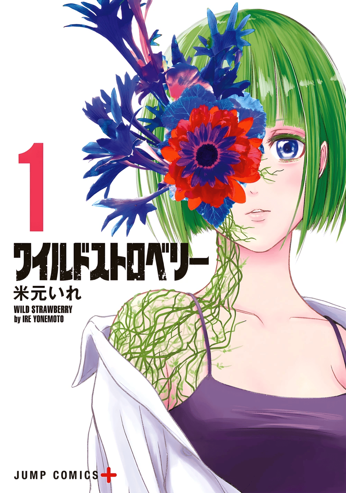

Wild Strawberry
Auteur : Ire Yonemoto
Artiste : Ire Yonemoto
Année de publication : 2023
Genres : Action, Drame, Fantaisie
Status : En cours
Synopsis
Les plantes ont évolué. Elles peuvent désormais se nourrir d'humains et devenir de terribles monstres connus sous le nom de Jinka. Kingo et Kayano font de leur mieux pour survivre dans un Tokyo envahi par les plantes, mais lorsque Kayano devient une Jinka, Kingo fera tout ce qu'il peut pour la récupérer !